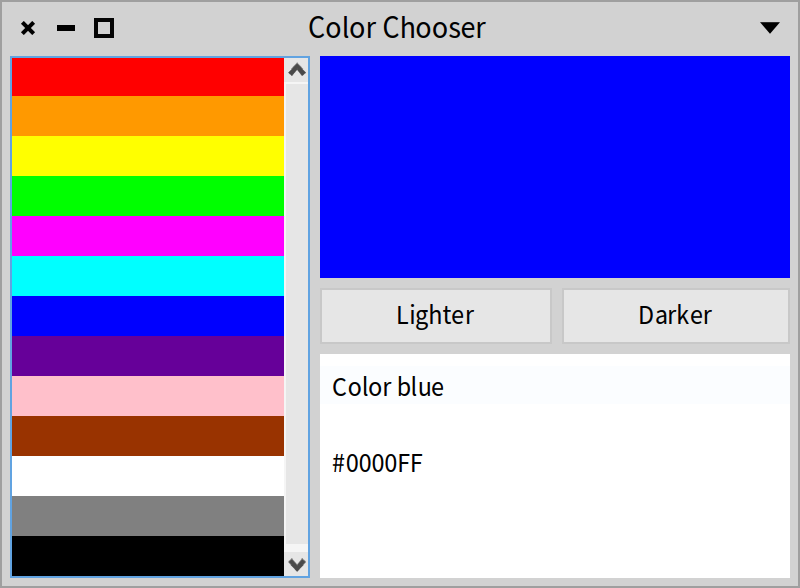
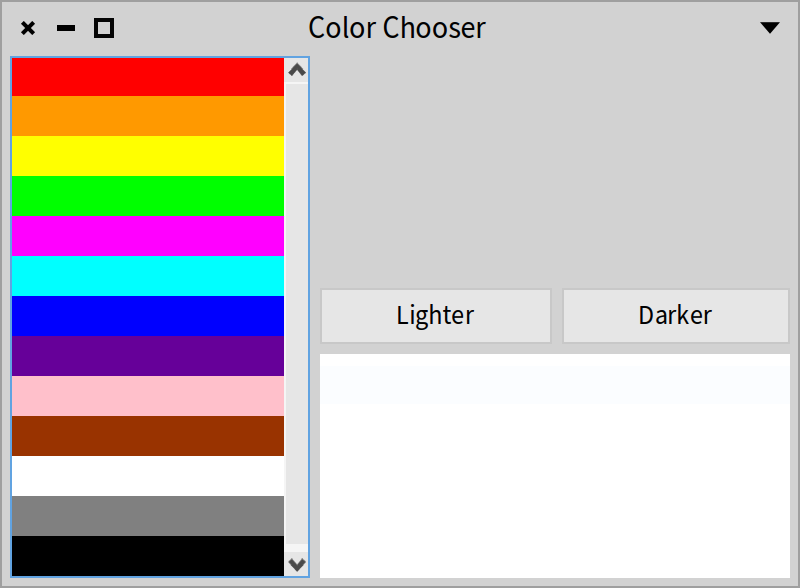
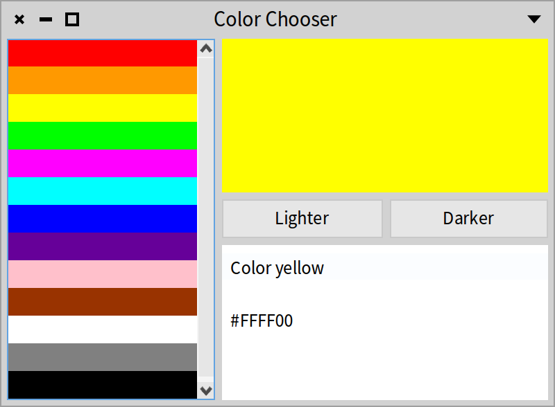

5 Testing Spec applications
Developers often think that testing a user interface is difficult. It is true that fully testing the placement and layout of widgets can be tedious. However, testing the logic of an application and in particular the interaction logic is possible. That is what we will show in this chapter. We will show that testing a Spec application is simple and effective.
5.1 Testing presenters
Tests are key to ensuring that everything works correctly. In addition, they free us from the fear of breaking something without being warned about it. Tests support refactorings. While such facts are general and applicable to many domains, they are also true for user interfaces.
Spec architecture
Spec is based on an architecture with three different layers as shown in Figure 5.1:
- Presenters: Presenters define the interaction logic and manipulate domain objects. They access backend widgets but via an API that is specified by Adapters.
- Adapters: Adapters are objects exposing low-level backend widgets. They are a bridge between presenters and low-level widgets.
- Backend widgets. Backend widgets are plain widgets that can be used without Spec.
Three roles and concerns
To help you understand the different possibilities of testing that you can engage in, we identify the following roles and their related concerns.
- Spec Users. Spec users are developers who build a new application. They define the logic of the application by assembling presenters and domain objects. We believe that this is the role that you will play most of the time.
- Spec Developers. Spec developers are more concerned with the development of new Spec presenters and their link with the adapters.
- Widget Developers. Widget developers are concerned about the logic and working of a given widget for a given backend.
Spec user perspective
We will focus on the first role. For the reader interested in the second role, the class SpAbstractBackendForTest is a good starting place.
As a Spec user, you should consider that the backends are working and your responsibility is to test the logic of the user interface components. You should make sure that when the model changes, the user interface components reflect the changes. Inversely when the user interface components change, you should ensure that the model is updated. Let's give an example.
5.2 Spec user example
We will test a simple spec application, as shown in Figure 5.2. The model for this application is an instance of the Color class. The application shows a list of colors from which the user can choose one. After choosing a color, the application shows the color in a big box, and it shows the printString of the color, together with the hexadecimal code. The application also provides two buttons to make the chosen color lighter or darker.

The presenter is defined as described below. The class has six instance variables. The first five instance variables hold subpresenters that compose the application window. The sixth instance variable holds the color that serves as the model of the application.
SpPresenter << #ColorChooser
slots: { #colorList . #colorDetails . #colorBox . #lighterButton . #darkerButton . #currentColor };
package: 'CodeOfSpec20Book'The method initializePresenters initializes the subpresenters. colorList holds a list presenter with the colors. colorBox displays the chosen color in a SpRoassalPresenter. colorDetails holds a text presenter that shows information about the color. lighterButton and darkerButton are the buttons to make the current color lighter or darker.
ColorChooser >> initializePresenters
colorList := self newList
display: [ :color | '' ];
displayBackgroundColor: [ :color | color ];
yourself.
colorBox := self instantiate: SpRoassalPresenter.
lighterButton := self newButton
label: 'Lighter';
action: [ self lighter ];
yourself.
darkerButton := self newButton
label: 'Darker';
action: [ self darker ];
yourself.
colorDetails := self newTextThe instance variable currentColor is not initialized by initializePresenters. It is initialized in setModelBeforeInitialization: because a color can be given when creating a new ColorChooser instance.
ColorChooser >> setModelBeforeInitialization: aColor
currentColor := aColorThe method defaultLayout defines the layout with a left side and a right side. The left side is the color list. The right side consists of the color box, the two buttons, and the color details. Composition with horizontal and vertical BoxLayouts, together with a 5-pixel spacing, results in the window shown in Figure 5.2.
ColorChooser >> defaultLayout
| colorBoxAndDetails buttons |
buttons := SpBoxLayout newLeftToRight
spacing: 5;
add: lighterButton;
add: darkerButton;
yourself.
colorBoxAndDetails := SpBoxLayout newTopToBottom
spacing: 5;
add: colorBox;
add: buttons expand: false;
add: colorDetails;
yourself.
^ SpBoxLayout newLeftToRight
spacing: 5;
add: colorList expand: false;
add: colorBoxAndDetails;
yourselfThe method initializeWindow: sets the title and the initial dimensions of the window.
ColorChooser >> initializeWindow: aWindowPresenter
aWindowPresenter
title: 'Color Chooser';
initialExtent: 400@294Connecting the subpresenters is expressed easily. When a selection in the color list is made, the color is updated.
ColorChooser >> connectPresenters
colorList whenSelectionChangedDo: [ :selection |
self updateColor: selection selectedItem ]The method connectPresenters delegates to updateColor: to update the color box and the color details. As you can see, updateColor: takes care of a possible nil value for currentColor.
ColorChooser >> updateColor: color
| details |
currentColor := color.
colorBox canvas
background: (currentColor ifNil: [ Color transparent ]);
signalUpdate.
details := currentColor
ifNil: [ '' ]
ifNotNil: [ self detailsFor: currentColor ].
colorDetails text: detailsThe method updateColor: delegates the responsibility of producing the text with color details to detailsFor:.
ColorChooser >> detailsFor: color
^ String streamContents: [ :stream |
stream
print: color; cr; cr; nextPut: $#;
nextPutAll: color asHexString ]We also define updatePresenter to set the initial state of the subpresenters. It populates the color list with default colors, as defined by defaultColors, and the initial color is set with updateColor:.
ColorChooser >> updatePresenter
| initialColor |
initialColor := currentColor.
colorList items: self defaultColors.
self updateColor: initialColorNote that keeping the initial color with initialColor := currentColor is necessary because colorList items: self defaultColors resets the selection in the list, which triggers the block in connectPresenters. That block sends updateColor: nil because there is no selection. So this method keeps the initial color and applies it with self updateColor: initialColor.
To keep things simple, defaultColors answers only a handful of colors. This method can be changed easily to answer a different collection of colors. For instance, you could try Color red wheel: 20.
ColorChooser >> defaultColors
^ {
Color red .
Color orange .
Color yellow .
Color green .
Color magenta .
Color cyan .
Color blue .
Color purple .
Color pink .
Color brown .
Color white .
Color gray .
Color black }There are only two methods missing from the code above to complete the class implementation. The method initializePresenters sets actions for the buttons, which invoke the following two methods. These methods delegate to the method updateColor: to do the heavy lifting.
ColorChooser >> lighter
self updateColor: currentColor lighterColorChooser >> darker
self updateColor: currentColor darkerWith the code above in place, we can open the application. Let's start with opening the default with:
ColorChooser new openIn this case, there is no initial color, which results in the window shown in Figure 5.3. The color box does not show a color and the color details are empty.

Let's see what happens when we provide a color with:
(ColorChooser on: Color yellow) openIn this case, yellow is given as the initial color that should be shown when the window opens. Note that on: has not been defined as a class method by ColorChooser. The class method is inherited from the superclass SpAbstractPresenter. The result is shown in Figure 5.4.

5.3 Tests
With all the code in place, it is time to write some tests. First, we define the test class.
TestCase << #ColorChooserTest
slots: { #chooser };
package: 'CodeOfSpec20Book'Each test will open a new instance of ColorChooser. It is expected that the instance variable chooser will hold the instance used in a test. To ensure that the instance is cleaned up, we define tearDown. It takes into account that a test can fail before chooser is bound to an instance of ColorChooser.
ColorChooserTest >> tearDown
chooser ifNotNil: [ chooser delete ].
super tearDownWith that infrastructure in place, we can write our tests.
Opening the default application
Our first test describes the state of the application after opening the default application.
ColorChooserTest >> testDefault
"When a ColorChooser opens without a color,
the color box shows a transparent color and the details are empty."
chooser := ColorChooser new.
chooser open.
self assert: chooser boxColor equals: Color transparent.
self assert: chooser detailsText equals: ''We have to add a few so-called 'test support' methods to make this work. These methods belong to the test api of the ColorChooser, because they are intended to be used for testing purposes only.
ColorChooser >> boxColor
^ colorBox canvas colorColorChooser >> detailsText
^ colorDetails textCorrect initialization
The second test describes the state of the application after opening the application with a color.
ColorChooserTest >> testInitialization
"When a ColorChooser opens on a color,
the color box shows that color
and the details show the print string and the HEX code."
chooser := ColorChooser on: Color palePeach.
chooser open.
self assert: chooser boxColor equals: Color palePeach.
self assert: chooser detailsText equals: 'Color palePeach\\#FFEDD5' withCRsChoosing a color
The third test describes what happens when the user chooses a color.
First, the test selects the first color in the list and verifies the state of the subpresenters. Then it selects the seventh color in the list and verifies the expected state changes in the subpresenters.
ColorChooserTest >> testChooseColor
"When the user chooses a color in the list,
the color box shows the color
and the details show the print string and the HEX code."
chooser := ColorChooser new.
chooser open.
chooser clickColorAtIndex: 1.
self assert: chooser boxColor equals: Color red.
self assert: chooser detailsText equals: 'Color red\\#FF0000' withCRs.
chooser clickColorAtIndex: 7.
self assert: chooser boxColor equals: Color blue.
self assert: chooser detailsText equals: 'Color blue\\#0000FF' withCRsThis test uses an extra test support method to click on a color in the list.
ColorChooser >> clickColorAtIndex: index
colorList clickAtIndex: indexMaking the current color lighter
Now, it is time to describe the application behavior after clicking the 'Lighter' button.
The test consists of four parts. First, the first color in the list is clicked. That results in an update of the color box and the color details. After a click on the button, the test verifies the changed state of the color box and the color details. Then it clicks the button a second time to describe that the current color can be made lighter over and over again. Finally, the test selects the seventh color in the list and verifies the expected state changes in the subpresenters.
ColorChooserTest >> testLighter
"When the user presses the 'Lighter' button,
the color box shows the ligher color
and the details show the print string and the HEX code."
chooser := ColorChooser new.
chooser open.
chooser clickColorAtIndex: 1.
chooser clickLighterButton.
self
assert: chooser boxColor
equals: (Color r: 1.0 g: 0.030303030303030304 b: 0.030303030303030304 alpha: 1.0).
self
assert: chooser detailsText
equals: '(Color r: 1.0 g: 0.030303030303030304 b: 0.030303030303030304 alpha: 1.0)\\#FF0707' withCRs.
chooser clickLighterButton.
self
assert: chooser boxColor
equals: (Color r: 1.0 g: 0.06060606060606061 b: 0.06060606060606061 alpha: 1.0).
self
assert: chooser detailsText
equals: '(Color r: 1.0 g: 0.06060606060606061 b: 0.06060606060606061 alpha: 1.0)\\#FF0F0F' withCRs.
chooser clickColorAtIndex: 7.
chooser clickLighterButton.
self
assert: chooser boxColor
equals: (Color r: 0.030303030303030304 g: 0.030303030303030304 b: 1.0 alpha: 1.0).
self
assert: chooser detailsText
equals: '(Color r: 0.030303030303030304 g: 0.030303030303030304 b: 1.0 alpha: 1.0)\\#0707FF' withCRsAs the other tests, this test requires an extra test support method.
ColorChooser >> clickLighterButton
lighterButton clickMaking the current color darker
This test is very similar to the previous test. Instead of clicking the 'Lighter' button, this test clicks the 'Darker' button.
ColorChooserTest >> testDarker
"When the user presses the 'Darker' button,
the color box shows the darker color
and the details show the print string and the HEX code."
chooser := ColorChooser new.
chooser open.
chooser clickColorAtIndex: 1.
chooser clickDarkerButton.
self
assert: chooser boxColor
equals: (Color r: 0.9198435972629521 g: 0.0 b: 0.0 alpha: 1.0).
self
assert: chooser detailsText
equals: '(Color r: 0.9198435972629521 g: 0.0 b: 0.0 alpha: 1.0)\\#EB0000' withCRs.
chooser clickDarkerButton.
self
assert: chooser boxColor
equals: (Color r: 0.8396871945259042 g: 0.0 b: 0.0 alpha: 1.0).
self
assert: chooser detailsText
equals: '(Color r: 0.8396871945259042 g: 0.0 b: 0.0 alpha: 1.0)\\#D60000' withCRs.
chooser clickColorAtIndex: 7.
chooser clickDarkerButton.
self
assert: chooser boxColor
equals: (Color r: 0.0 g: 0.0 b: 0.9198435972629521 alpha: 1.0).
self
assert: chooser detailsText
equals: '(Color r: 0.0 g: 0.0 b: 0.9198435972629521 alpha: 1.0)\\#0000EB' withCRsAgain, this test requires an extra test support method. Note that such a method is not mandatory and could be replaced by a simple access to the button using an accessor. Using such a helper method factors the logic.
ColorChooser >> clickDarkerButton
darkerButton clickVerifying window properties
Now we want to check that the window is built correctly. We will verify that the title and the initial extent of the window are correct.
ColorChooserTest >> testInitializeWindow
| window |
chooser := ColorChooser new.
window := chooser open.
self assert: window isBuilt.
self assert: window title equals: 'Color Chooser'.
self assert: window initialExtent equals: 400@2945.4 Testing your application
In Spec, an application is responsible to run and gather the windows of your application. The pattern is to override the start method of your application. The method start is a hook method that is invoked when you execute your application using the run message as in ColorChooserApplication new run.
It is important to see that in the start method you should configure the presenter you are opening so that it knows its application. This is important so that the application knows the windows it is opening.
In a TDD fashion, we define the test class first:
TestCase << #ColorChooserApplicationTest
slots: { #application };
package: 'CodeOfSpec20Book'ColorChooserApplicationTest >> setUp
super setUp.
application := ColorChooserApplication newColorChooserApplicationTest >> tearDown
application ifNotNil: [ application closeAllWindows ].
super tearDownColorChooserApplicationTest >> testWindowRegistration
self assert: application windows size equals: 0.
application start.
self assert: application windows size equals: 1.
application start.
self assert: application windows size equals: 2The method testWindowRegistration describes the expected behavior of our application. When opened windows are correctly registered, the application should have access to all the opened windows. The test opens two windows and verifies that the number of windows increases.
The test fails, because ColorChooserApplication does not exist yet. Let's define it:
SpApplication << #ColorChooserApplication
slots: {};
package: 'CodeOfSpec20Book'The test still fails. It fails in the second assertion because the application does not register the open windows. Let's implement the start method to register the windows.
ColorChooserApplication >> start
ColorChooser new
application: self;
openTada! The test passes.
5.5 Known limitations and conclusion
In this chapter we showed that you can take advantage of Spec to define tests that will help you to evolve the visual part of your application. This is really key for modern software development and to lower your stress in the future. So take advantage of agile development.
Currently, Spec does not offer a way to script and control popup windows. It is not possible to script a button that opens a dialog for a value. Future versions of Spec should cover this missing feature.